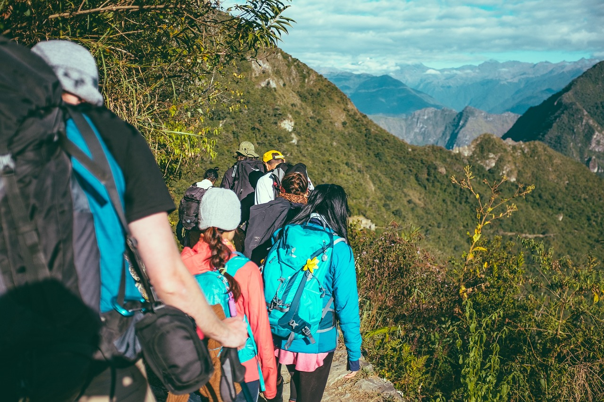
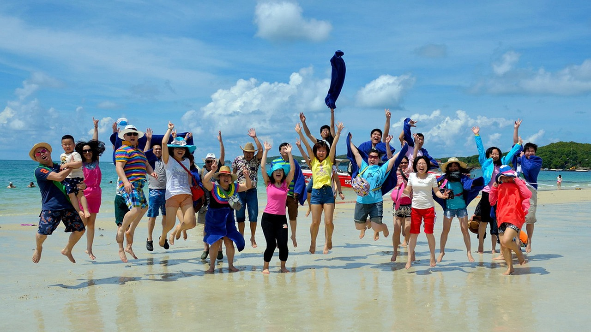

Partez à l'Aventure avec Nos Voyages en Groupe

Rejoignez-nous pour une expérience de voyage extraordinaire en groupe. Notre service spécialisé vous propose une sélection de destinations fascinantes à découvrir avec d'autres passionnés de voyages. Chaque voyage est conçu pour offrir une immersion totale dans la culture locale, des aventures uniques et des souvenirs inoubliables.
Voyager en groupe est une expérience enrichissante qui offre une multitude d'avantages. Lorsque vous explorez le monde avec d'autres passionnés de voyage, chaque destination devient une aventure collective, tissée de moments inoubliables. Cette approche offre non seulement la chance de partager des expériences uniques, mais aussi de créer des liens durables avec des personnes partageant les mêmes intérêts et passions que vous.
Nos voyages en groupe sont soigneusement conçus pour offrir un équilibre parfait entre exploration individuelle et activités collectives. Vous aurez l'opportunité de découvrir des destinations extraordinaires tout en profitant de la camaraderie d'un groupe de voyageurs animés par la même curiosité et l'envie de découvrir le monde.
Voyager en groupe signifie également bénéficier d'un encadrement professionnel et de guides expérimentés qui vous accompagnent à chaque étape de votre périple. Ces experts locaux vous fourniront des connaissances approfondies sur les lieux visités, des conseils pratiques et des recommandations authentiques pour vivre une expérience immersive et authentique.
Que vous soyez un voyageur solo en quête de nouvelles amitiés ou un groupe déjà constitué désirant explorer le monde ensemble, nos voyages en groupe offrent une variété d'options flexibles pour répondre à vos besoins. Rejoignez-nous pour une aventure inoubliable où la découverte, le partage et la convivialité sont au cœur de chaque expérience de voyage.
Découvrez Nos Circuits organisés

Nos circuits organisés sont conçus pour vous offrir une expérience immersive sans tracas. Laissez-nous prendre en charge les détails logistiques pendant que vous vous concentrez sur la découverte de destinations extraordinaires. Chaque circuit est minutieusement planifié pour offrir une aventure parfaitement orchestrée, vous permettant ainsi de profiter pleinement de chaque moment.
Embarquez pour un voyage captivant à travers des destinations iconiques et des joyaux cachés. Nos circuits organisés vous emmènent au cœur de paysages à couper le souffle, de cultures vibrantes et d'expériences uniques. Des visites guidées aux activités soigneusement sélectionnées, chaque étape est pensée pour vous offrir une immersion totale et des souvenirs inoubliables.
Nos guides passionnés et expérimentés sont à vos côtés pour vous dévoiler les secrets des lieux visités. Leur expertise locale, combinée à leur amour pour le voyage, enrichit chaque étape de votre parcours. Vous bénéficierez de conseils avisés, d'anecdotes fascinantes et d'histoires captivantes, donnant vie à chaque destination.
Nous comprenons que chaque voyageur a ses propres préférences. C'est pourquoi nos circuits offrent une gamme d'options pour répondre à diverses attentes. Que vous recherchiez une aventure active, des moments de détente ou des expériences culturelles approfondies, nos circuits organisés sont conçus pour s'adapter à vos besoins spécifiques.
Voyager en groupe crée des liens durables et des souvenirs partagés. Rencontrez des compagnons de voyage partageant les mêmes passions, tissez des amitiés et créez des liens uniques en explorant le monde ensemble. Les circuits organisés offrent l'opportunité de créer des souvenirs qui dureront bien après votre retour à la maison.
Guides Locaux Expérimentés

Nos circuits organisés sont conçus pour vous offrir une expérience immersive sans tracas. Laissez-nous prendre en charge les détails logistiques pendant que vous vous concentrez sur la découverte de destinations extraordinaires. Chaque circuit est minutieusement planifié pour offrir une aventure parfaitement orchestrée, vous permettant ainsi de profiter pleinement de chaque moment.
Embarquez pour un voyage captivant à travers des destinations iconiques et des joyaux cachés. Nos circuits organisés vous emmènent au cœur de paysages à couper le souffle, de cultures vibrantes et d'expériences uniques. Des visites guidées aux activités soigneusement sélectionnées, chaque étape est pensée pour vous offrir une immersion totale et des souvenirs inoubliables.
Nos guides passionnés et expérimentés sont à vos côtés pour vous dévoiler les secrets des lieux visités. Leur expertise locale, combinée à leur amour pour le voyage, enrichit chaque étape de votre parcours. Vous bénéficierez de conseils avisés, d'anecdotes fascinantes et d'histoires captivantes, donnant vie à chaque destination.
Nous comprenons que chaque voyageur a ses propres préférences. C'est pourquoi nos circuits offrent une gamme d'options pour répondre à diverses attentes. Que vous recherchiez une aventure active, des moments de détente ou des expériences culturelles approfondies, nos circuits organisés sont conçus pour s'adapter à vos besoins spécifiques.
Voyager en groupe crée des liens durables et des souvenirs partagés. Rencontrez des compagnons de voyage partageant les mêmes passions, tissez des amitiés et créez des liens uniques en explorant le monde ensemble. Les circuits organisés offrent l'opportunité de créer des souvenirs qui dureront bien après votre retour à la maison.